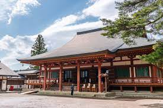

岩手県西磐井郡平泉町（創建時は陸奥国磐井郡平泉）に所在する、天台宗の寺院です。中尊寺と同じく平泉―仏国土（浄土）を表す建築・庭園及び考古学的遺跡群―の構成資産の一つです。
境内には多くの史跡があり、歴史的建造物を堪能することができます。
岩手県西磐井郡平泉町（創建時は陸奥国磐井郡平泉）に所在する、天台宗の寺院です。中尊寺と同じく平泉―仏国土（浄土）を表す建築・庭園及び考古学的遺跡群―の構成資産の一つです。
境内には多くの史跡があり、歴史的建造物を堪能することができます。
浄土庭園とは仏堂と苑池とが一体として配された庭園で、
毛越寺では北に塔山と呼ばれる小山を背景として、広々とした苑地美観が展開します。
大泉が池は浄水をたたえ、その周辺には、州浜、荒磯風の水分け、浪返しにあたる立石、
枯山水風の築山といった石組みや、池に水を引き入れる遣水など、自然の景観が表されています。
毛越寺では、昔ながらの坐禅を体験することができます。
坐禅とは、正しい姿勢で坐り、精神統一を行うことです。禅宗における基本の修行ともいえます。仏教の開祖であるお釈迦様は、インドにあるブタガヤの菩薩樹の下、7日7晩の坐禅を行った後に悟りを開かれました。現代でも、坐禅をすることで心の働きを整えることができます。
日頃の慌ただしい生活からちょっと離れて毛越寺で坐禅を組んでみませんか？
毛越寺では、特徴的な御朱印をいただくことができます。写真のような寺院の紋章だけでなく、庭園の切り絵が入った御朱印をいただくことができます。
全国には様々な御朱印がありますが、なかなか切り絵が入った御朱印はないと思います。
毛越寺を訪れた記念にもなりますので、ぜひいただいてみてはどうでしょうか。
〒029-4102
岩手県西磐井郡平泉町平泉大沢５８
☏ 0191-46-2331